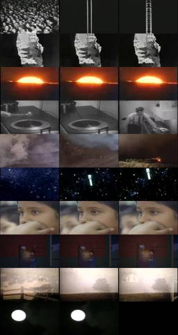
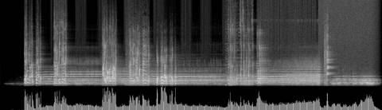
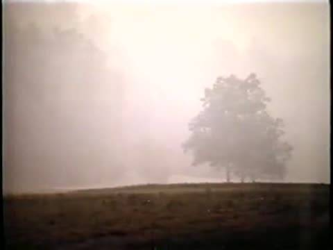
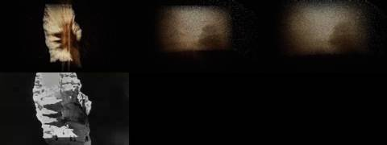
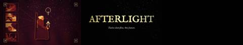
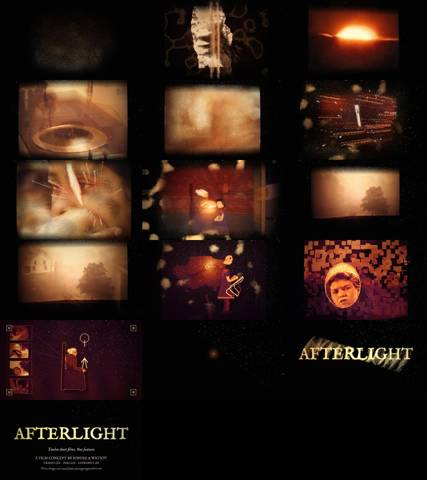
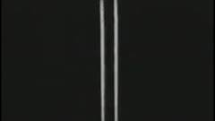
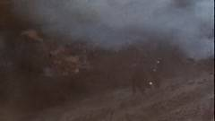
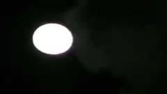

Afterlight / IV Trailer / AFL-09
IV · Trailer · AFL-09 of 21 · 1:23
The Afterlife of Light, trailer
The note that produced it
Stop forcing text to fight the sound; let the archive’s own words and found sound lead.
“Think of the afterlife of the pixels more like embers burning above a fire into stars static all smooth mesmerizing layering.”
What was made
No title cards. Seven archive voices about light and heat each speak once, and each last word is held and tuned under the next. Each picture gathers out of static, burns from a slow front, and its light rises as embers that stay as stars.
Found noise through resonators on the harmonic series of D · ember particles to a star field · swarms as heat
What came back
The note on this version, which produced AFL-10 Warm Dome:
Cut it to this song, Warm Dome & Golden Record, with twelve plates for its parts: embers in wind, caustics at night, a golden dome. “Seamless.”
Images made while working: contact sheets, check frames, spectrograms, the stills compared before and after a fix. Tap one to see it full size.


















No separate critic agent was run on this cut. The critique came from the director, in the notes on either side of it.
On the cut before
Stop forcing text to fight the sound; let the archive’s own words and found sound lead. The transition is “too transactional”: think of pixels as “embers burning above a fire into stars.”
On this cut
Cut it to this song, Warm Dome & Golden Record, with twelve plates for its parts: embers in wind, caustics at night, a golden dome. “Seamless.”
Files
The scripts that made this version, as plain text.
- timeline4.py54 linesthe seven voices and their plates
- trailer4.py273 linesburn fronts, embers to stars
- score4.py130 linesfound noise through tuned resonators
A film concept by Sosuke & Watson · CRASH LAB · PAELEO · CINEOSIS LAB